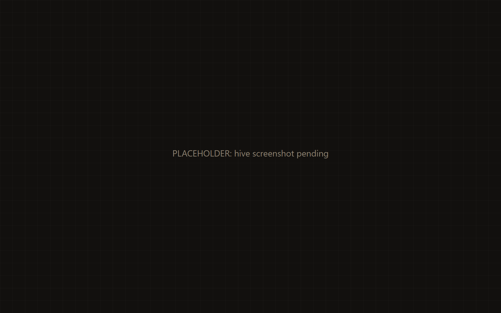
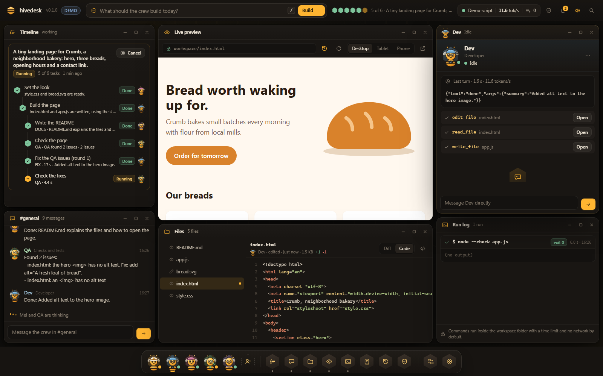
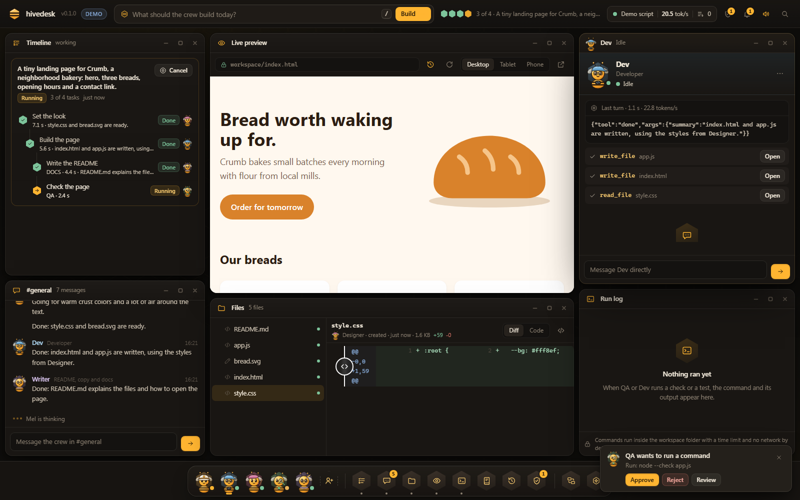
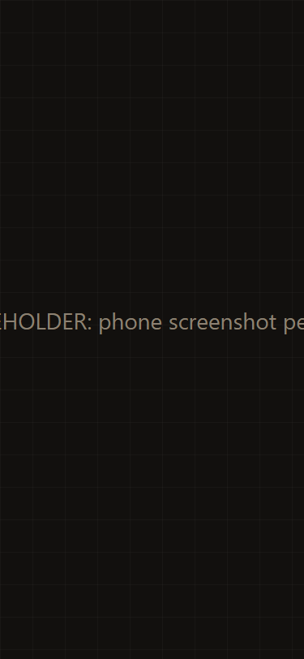

v0.1.0 · MIT · local first
One command.
A whole AI crew on your machine.
Type npx hivedesk and it does the rest: checks your hardware, installs the local runtime, downloads the right model with a progress bar and opens the Hive. Then a crew of AI workers plans, talks and builds real files on your computer.
npx hivedesk
No account. No API key. First run downloads 1.1 to 4.7 GB once. Read the limits first.

- Detecting the hardwareGPU 6 GB
- Installing the runtimeonce
- Qwen2.5-Coder 7B4.7 GB
- The crew is readygo
- One commandno setup, no questions
- Local modelQwen2.5-Coder on your GPU or CPU
- No account, no keyyour files stay on your machine
- You approverisky steps wait for your yes
Install
Run one command. Everything else happens by itself.
No installer, no config file, no sign up. You need Node.js and a network connection for the first run. From the second run on it works offline.

What npx hivedesk does on the first run
- Starts the server on
127.0.0.1with a secret token in the URL and opens your browser. The Hive shows a progress bar while the rest runs. - Looks for a model server already running. If Ollama or LM Studio answers with a model, hivedesk uses it and skips the download.
- Detects the hardware: OS, CPU cores, RAM, free disk and the GPU with its VRAM.
- Installs the local runtime
node-llama-cppinto~/.hivedesk/runtime/, once. It is not a dependency of the package, sonpx hivedeskitself stays small. - Picks and downloads a model from the official Qwen repositories on Hugging Face into
~/.hivedesk/models/, showing its name, size and source. A cut download resumes, and the file is checked against its published SHA-256. - Loads the model, on the GPU when possible. The crew says ready and the request box opens.
From FIRST-RUN.md, the exact behavior of the engine.
Which model you get
| Your hardware | Model (Q4_K_M) | Download |
|---|---|---|
| GPU with 6 GB of VRAM or more | Qwen2.5-Coder 7B Instruct | 4.7 GB |
| GPU with 3.5 GB or more, or no GPU and 16 GB of RAM | Qwen2.5-Coder 3B Instruct | 2.1 GB |
| Anything else | Qwen2.5-Coder 1.5B Instruct | 1.1 GB |
How long the first run takes
Most of it is the model download. Pick yours to see an estimate.
About 6 minutes for the model, plus a few hundred MB for the runtime and a short model load. For reference, the 2.1 GB model took 10 minutes on the connection we tested with.
The second run skips both and is ready in seconds: the time to load the model into memory.
Requirements
- Node.js 18 or newer on Windows, macOS or Linux.
- Free disk: the model (1.1 to 4.7 GB) plus up to about 0.7 GB for the runtime. If the disk is short, hivedesk picks a smaller model that fits, or stops before downloading.
- A GPU is optional. NVIDIA, Apple Silicon and others through the runtime. Without one it runs on the CPU, slowly.
- A network connection on the first run only, for the runtime and the model.
- A current browser for the Hive.
Useful flags
--demo- No model at all: a scripted job replays so you can look around. Every event is labeled as a demo.
--brain ollama- Use a model server you already run (also
lmstudio, oropenaiwith--urland a key inHIVEDESK_API_KEY). --model file.gguf- Use a GGUF file you already have.
--no-download- Never download; the Hive offers a button instead.
--doctor- Prints the checks (Node, GPU, RAM, disk, models found) and exits.
--dir path- The folder the crew works in. Default: the current folder.
How the crew works
You ask. Mel plans. The crew builds, checks and shows every step.
Each worker is a window on the Hive with an avatar, a status dot and a live chat. They talk in #general, hand work to each other and write real files in your workspace.

-

Mel foreman
Turns your request into a task graph, assigns it and keeps the timeline honest. Reuses playbooks from jobs that went well.
Dev
Writes and edits code in the workspace. Every write shows up as a diff.
Designer
Layout, styles and the small details of the UI.
QA
Runs checks and tests, and sends issues back as fix tasks.
Writer
README, copy and docs, in plain words.
Hire your own
Give a new worker a role, an avatar color and a list of allowed tools.
One model, fair turns
Workers never use the model at the same time. A fair scheduler gives turns and the queue is always visible.
Approval mode, on by default
Deleting files or running commands waits for your yes, with the diff or the command in front of you.
Tools scoped to the workspace
List, read, write, edit, run and preview, inside the workspace only. Commands get a timeout and no network by default.
Playbooks
A job that ends well is saved as a playbook. Mel finds similar ones and reuses the plan.
Replay the day
Every event goes to an append-only log. Scrub back to any moment and see what happened and why.
Live preview
The workspace is served as a site inside the Hive, so you see the page as the crew builds it.
Inside the Hive
A desktop for your crew, in the browser.
Drag, resize and snap windows, minimize them to the dock, press Ctrl K for the command palette. On a phone the windows become stacked cards.



Honest about the limits
What hivedesk is great at, and what it is not.
A small model on your own machine is real and private, and it is also slower and less capable than the biggest models in a data center. Here is what to expect before you run it.
It needs a model
Without one, nothing is generated. The first run downloads one, 1.1 to 4.7 GB, unless Ollama or LM Studio is already running or you give it a key.
It is slower than it looks in videos
Workers take turns on one model, so a job takes minutes, not seconds. On the CPU only, the model writes a few tokens per second.
It works best with you steering
Ask for one thing at a time, read the diffs, approve the steps. Big apps in one go are out of reach for a small model.
What your hardware can do
| Hardware | Model it runs | Speed | Good for |
|---|---|---|---|
| No GPU | Qwen2.5-Coder 1.5B, or 3B with 16 GB of RAM | Slow, a few tokens per second | Small, single file tasks. Expect to wait. |
| GPU with 3.5 to 6 GB | Qwen2.5-Coder 3B | Usable | Small tasks, components, scripts, copy. |
| GPU with 6 to 8 GB | Qwen2.5-Coder 7B | Good | Small and medium tasks, with you steering. |
| Bigger GPU, or a key | A bigger model through Ollama, LM Studio or any OpenAI compatible endpoint | Faster | Bigger jobs and longer plans. |
Great at
- Landing pages
- Small CRUD apps
- Scripts and command line tools
- UI components
- Tests for code you already have
- Docs, READMEs and copy
- Fixing a bug you describe
Not great at
- Large or complex apps in one go
- Long jobs without you reading and approving the steps
- Speed on a machine without a GPU
- Anything at all without a model: no model, no output
It works best when you split the work, steer and approve. That is what the timeline and approval mode are for.
Everything stays on your machine. Lend mode only sends model prompts and answers to a friend you paired with: never files, one request at a time, at most 20 per minute, prompts up to 120,000 characters. The friend sees every request and can stop at any time. There is no TURN relay built in, so two very strict networks may not connect.
Lend your PC
A friend with a better GPU can lend you their model.
Your crew keeps working on your machine. Only the model turns go to your friend, over an encrypted peer link, and only while they say so.

Your friend runs
npx hivedesk --lendThey get six words, a QR code and a share link.
You enter the six words
Or open the link. The two browsers pair over WebRTC and show the same confirmation words, so you know nobody is in the middle.
Your crew uses their model
The scheduler sends model turns to the friend's brain. They see every request in a log and can stop lending at any time.
- Only model requests travel. The friend's files are never touched, and your files never leave your machine.
- Pairing is encrypted with the six words. It goes through public MQTT relays that only see a random topic and AES-GCM ciphertext, then the browsers talk directly.
- Each side talks only to its own hivedesk, over the local WebSocket on 127.0.0.1.
- Limits that protect the friend: one request at a time, at most 20 per minute, prompts up to 120,000 characters. The words work once and expire after 10 minutes.
- No TURN relay is built in, so two very strict networks may not connect.
Privacy
Your code, your prompts and your model stay on your machine.

Local only
The server binds 127.0.0.1 and checks a secret token on every request, so other devices and other sites cannot reach it.
No account, no tracking
No sign up, no analytics. The network is used for the first run download and for Lend mode, and nothing else unless you pick a remote endpoint yourself.
Plain files you own
Everything lives in .hivedesk/ in your folder: an event log, a state snapshot, playbooks and the workspace. The cache lives in ~/.hivedesk/.
FAQ
Questions people ask first.
Do I need an account or an API key?
No. The default is a model that runs on your own machine. A key is optional, only if you want to point hivedesk at an OpenAI compatible endpoint.
How big is the download, and how long does the first run take?
The model is 1.1 GB, 2.1 GB or 4.7 GB depending on your hardware, plus a few hundred MB for the runtime. On a 100 Mbit/s connection the 7B model takes about 6 minutes; on 25 Mbit/s, about 25 minutes. It happens once. After that a run is ready in the time it takes to load the model.
Will it run on a laptop without a GPU?
Yes, on the CPU with the 1.5B model, or the 3B model with 16 GB of RAM. It is slow: a few tokens per second. Small tasks work; expect to wait.
Can I use a model I already have?
Yes. If Ollama or LM Studio is running with a model, hivedesk uses it and skips the download. You can also pass --model with a GGUF file, or --brain openai with an endpoint and a key.
Can it build a big app for me in one go?
No, and it does not pretend to. It is good at landing pages, small CRUD apps, scripts, components, tests, docs and fixing a bug you describe. For anything bigger, split it into steps and approve as you go.
Why does a job take minutes?
All workers share one model and take turns, and each turn is a full answer from that model. The queue is on screen, so you always see who is thinking and who is waiting.
Can a worker break my computer?
Workers only have tools scoped to the workspace folder. Paths that try to escape it are refused. Commands run with a timeout, an output cap and no network by default, and approval mode makes risky steps wait for you.
Can I look around without downloading a model?
Yes: npx hivedesk --demo replays a scripted job. Everything it shows is labeled as a demo.
What does lending cost my friend?
Their GPU time and some power while your crew uses it. They see each request, nothing touches their files, and they can stop at any time.
How do I remove it?
Delete ~/.hivedesk/ (the runtime and the models) and the .hivedesk/ folder in your project. There is nothing else to uninstall.
Mel is ready when you are.
One command, then the crew is on your desk.
npx hivedesk
Needs Node.js 18 or newer. Read the limits before you start.